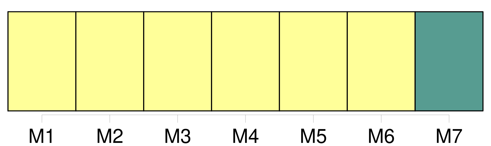
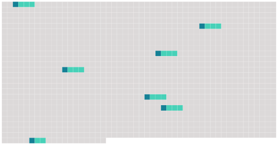

Longueur nb maillons : 7 mentions |
 |
Il nomme [les chefs de départements] et les membres du corps enseignant, désignés par le conseil académique conformément à l'article 9 paragraphe 5 sous d ). [15 phrases]
Sont membres du conseil académique : [5 phrases]
Le conseil académique [3 phrases] Un bureau du conseil académique, présidé par le président de l'Institut, assisté du secrétaire général et composé du président et [des chefs de départements] , exerce les tâches particulières qui lui sont confiées par le conseil académique. [12 phrases] L'organisation des divers séminaires et des équipes de recherche relève de la responsabilité [des chefs de départements] [3 phrases]
Le sujet des travaux à effectuer par chaque séminaire et équipe de recherche est porté à la connaissance du conseil académique par [les chefs de départements] après concertation avec les professeurs et les assistants. [15 phrases]
Le corps enseignant est composé des [chefs de départements] , des professeurs, des assistants et des autres enseignants. |
 |
Il est possible de télécharger la ressource sur la page Ortolang |
Si vous avez des questions ou vous voyez des erreurs, merci d'envoyer un mail à silvia.federzoni89@gmail.com |